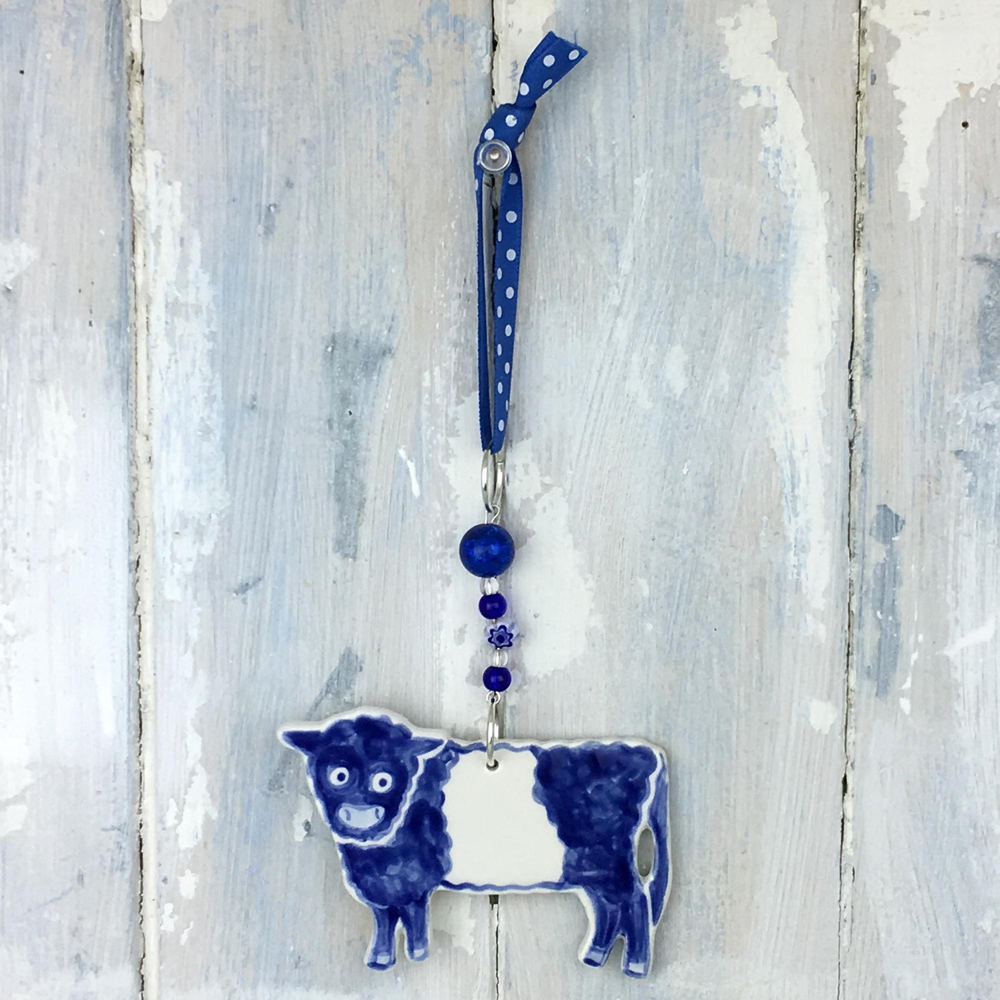
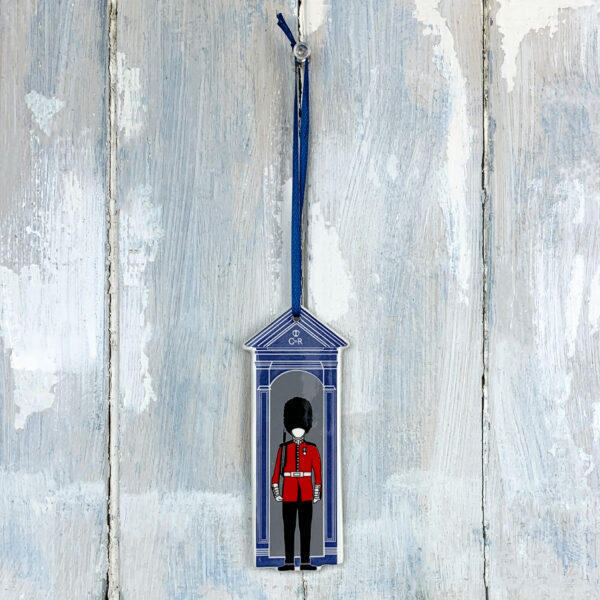

All Bespoke Decorations
Browse our complete catalogue of bespoke ceramic decorations, created for venues across the UK and beyond. Each piece is handmade in our Berkshire studio and available exclusively through its retailer.

Abbotsford House

Anfield Stadium

Arley Hall

Ba Ball Doonies

Ba Ball Uppies

Bath Abbey

Bath Roman Baths

Battersea Power Station

Bayleaf Farmstead

Beaulieu Palace House

Beatles Abbey Road

Belted Galloway Cow

Beverley Minster

Bibury Arlington Row

Bibury Trout

Big Ben

Biggar Museum

Black Mountain Rocking Chair

Black Taxi

Bluecoat, Liverpool

Bournemouth Pier

Bowes Museum

Bowes Museum Swan

Bridge of Sighs, Oxford

Buckingham Palace

Cawdor Castle

Chester Cathedral

Chesterfield Crooked Spire

Christ Church Cathedral, Falkland Islands

Christmas Jumper Spitfire

Clifton Suspension Bridge

Court Barn

Coventry Cathedral

Cromarty Courthouse Museum

Cyfarthfa Castle

Divinity School, Oxford

Doddington Hall

Dunnottar Castle

Dunollie Castle

Durham Cathedral

Edinburgh Castle

Edinburgh Castle Crown

Big Ben

Fair Isle Jumper Board

Floors Castle

Gawthorpe Hall

Glastonbury Abbey

Glyndebourne Opera House

Goodison Park Stadium

Gretna Green Blacksmiths Shop

Greyfriars Bobby

Het Scheepvaartmuseum, Amsterdam

Highclere Castle

Highland Cow (Inveraray)

Hoogwegt Cow

Houses of Parliament

Husavikurkirkja, Iceland

Inveraray Castle

Iona Abbey

IWM Spitfire

Kasteel Amerongen

Kasteel de Haar

Kelmscott Manor

Kew Botanic Gardens Palm House

King Penguin Pair

King’s Guard

Liberty Building

Linlithgow Palace

Liverpool Anglican Cathedral

Liverpool Liver Building
Liverpool Liver Building (Black)

Liverpool Liver Building with Rainbow

Liverpool Metropolitan Cathedral
Liverpool Sefton Park Palm House

Liverpool Three Graces

London Bus

London Phone Box

London Post Box

Longleat House

Loop-the-Loop Rollercoaster

Lossiemouth East Beach Bridge

Lowther Castle

Lulworth Castle

Manchester Jumper

Map of Kintyre

McEwan Hall, Edinburgh

Mersey Dazzle Ferry

MG Abingdon A Block

Montreat Gate, North Carolina

Museum Schokland Kerk

National Museum Cardiff

New College, Edinburgh

Newbury Cloth Hall

Nottingham Castle Ducal Palace

Nottingham Castle Gate House

Nottingham Robin Hood

Old College, Edinburgh

Old Royal Naval College

Orca in Fair Isle Jumper

Ordsall Hall

Orkney Viking Runic Sweater

Otter in Fair Isle Jumper
Oxford Botanic Garden

Oxford Christ Church Tom Tower

Oxford Dodo

Oxford University Museum of Natural History

Paisley Abbey

Palace of Holyroodhouse

Peerie Shop, Lerwick

Perth Art Gallery

Perth Museum

Pile of Books

Portsmouth Spinnaker Tower

Puffin in Fair Isle Jumper

Pump Street Chocolate

Raby Castle

Raasay House

Radcliffe Camera

Reading Abbey

Reading Town Hall and Museum

Richmond Theatre

Robin Hood’s Bay

Rosslyn Chapel

Royal Opera House

Royal Pavilion, Brighton

Salford Museum and Art Gallery

Scottish Fire Engine

Shaw House

Shaw House Teapot

Sheldonian Theatre

Shetland Crofthouse

Shetland Pony in Fair Isle Jumper

Shrine of Our Lady of Walsingham

Skara Brae, Orkney

Skaill House

Skyfall

South Parade Pier, Portsmouth

St Albans Cathedral

St Albans Cross

St Davids Cathedral

St Giles’ Cathedral

St John’s Cross

St Laurence Church, Ludlow

St Machar’s Cathedral

St Magnus Cathedral, Orkney

St Mary Redcliffe

St Mary’s Church, Hitchin

St Mary’s Church, West Derby

St Paul’s Cathedral

Steel Drop Rollercoaster

Stonehenge

Tamworth Castle

Tewkesbury Abbey

Teviot Row House, Edinburgh

The National Archives

Titchfield Market Hall

Tower Bridge

Traditional Hooded Orkney Chair

Traditional Orkney Chair

University of St Andrews

Victoria’s Vintage Tea Rooms Teapot

Wells Cathedral

Windsor Castle

Wooden Rollercoaster

York Minster